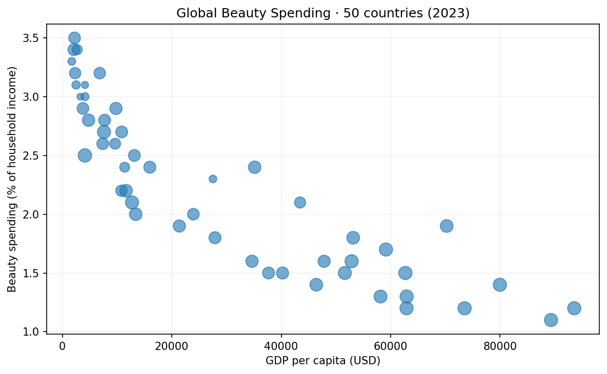

- countries
- 50
- project data year
- 2023
- spending measures
- 2
My contribution
Integrated country-level socioeconomic indicators and beauty-spending estimates. Built an R Shiny dashboard with regional filters, scatter plots, trend lines, Pearson correlations, box plots, and a bubble-chart view.
Findings and evidence
Exploratory analysis suggested higher-income countries generally had higher spending per capita, while lower-income countries often devoted a larger share of household income to beauty spending. Regional differences remained visible.

Open full size ↗Explore the data
A browser preview using the original 2023 project CSV. The full R Shiny app source is linked below. These are academic project estimates, not current market prices.
Loading project data…
Hover over or focus a point for its values. On smaller screens, scroll the chart sideways or use the data table. GDP and per-capita spending use the original CSV units without an unverified currency label.
View the selected data
| Country | GDP per capita | Spending per capita |
|---|
The question
Do countries with similar levels of economic development and gender equality still differ in beauty spending, and what regional patterns appear?
A closer look at the method
The R Shiny app filters the same country-level dataset before updating its charts and statistics. The code below shows the preserved complete-case check used for the selected correlation.
Inspect the R correlation calculation
plot_data <- filtered_data()
complete_rows <- complete.cases(
plot_data[[input$xvar]], plot_data[[input$yvar]]
)
if (sum(complete_rows) < 3) {
return("Correlation: not enough complete observations")
}
cor(
plot_data[[input$xvar]][complete_rows],
plot_data[[input$yvar]][complete_rows]
)
Excerpt from the public app.R. The browser preview below is a separate implementation using the same project CSV.
Data and interpretation
The 2023 dataset combines GDP per capita, the Gender Inequality Index, female labor-force participation, and two spending measures. Socioeconomic indicators were drawn from World Bank, UNDP, and ILOSTAT sources. Beauty-spending values were manually compiled from secondary market reports and are project-level estimates rather than a standardized official dataset.
The sample is descriptive and does not establish causation or market profitability. Use it to identify questions for further research, then validate local demand, prices, distribution costs, and source comparability before recommending market entry or pricing.
Analysis workflow
View the three steps
- Integrate Combine socioeconomic indicators and secondary beauty-spending estimates.
- Explore Compare regions, indicators, and spending definitions in R Shiny.
- Communicate Explain the patterns alongside source comparability and interpretation limits.
Why this work matters
Compare both absolute spending and spending relative to income when framing market-research questions. These indicators help prioritize further investigation; they do not establish a profitable price or market-entry decision.